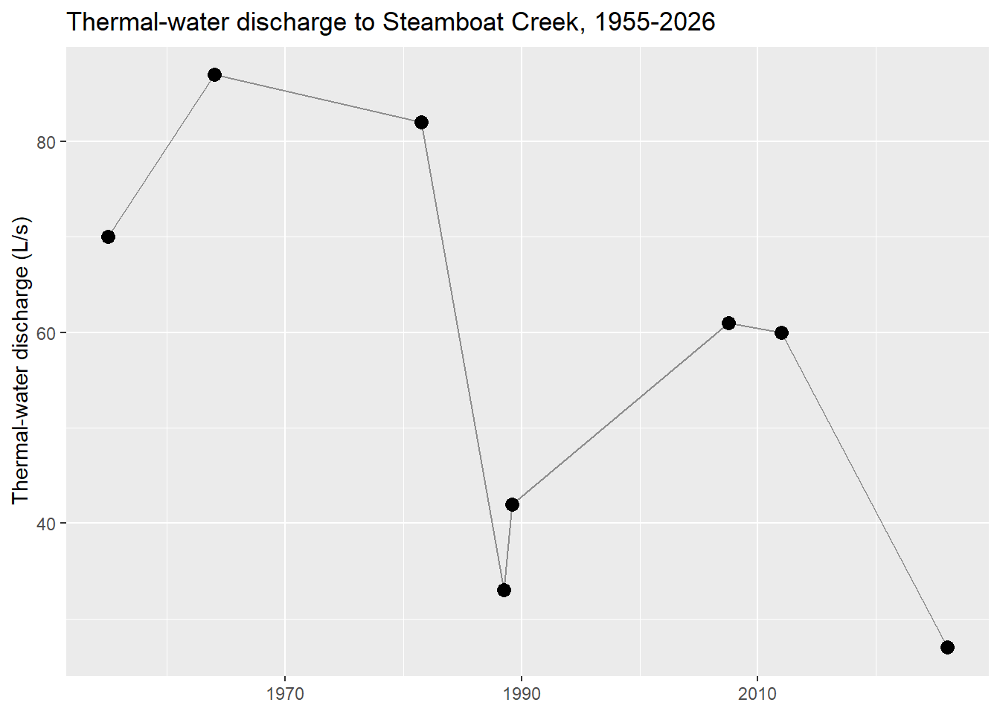

This page is deliberately narrower in scope than the Data System page: rather than describing the database’s structure, it asks what the observations collected so far actually reveal about how the Steamboat Hills system behaves. The honest answer, at this stage, is that the continuous temperature record is the richest signal currently available, and it already shows more structure than any discrete sampling program could have captured on its own.
## Temperature data will appear after export.Two things stand out in that record. First, individual temperature loggers hold distinct, persistent temperature ranges rather than converging on one system-wide value, a strong indication that the field is spatially heterogeneous, with different monitoring points sitting on different flow paths, at different depths, or at different distances from the main upflow zones. Second, within any single logger’s record there is real short-term variability that a quarterly or even monthly chemistry sample would average away entirely; that variability is exactly the kind of signal this project’s monitoring-frequency question (below) is trying to characterize rigorously rather than just observe qualitatively.
Any pattern in the charts above has to be read alongside where the underlying instruments actually sit, since a monitoring network that is spatially uneven will always look more (or less) variable than the system truly is, depending on where its gaps fall. The map below repeats the well/spring layer from the Data System page and adds the temperature and conductivity loggers themselves, so the instrument that produced each pattern above can be located directly: it is the map to have open while interpreting anything else on this page.
## Spatial data will appear after export.The plots above use a ggdist half-eye display rather
than a plain box-and-whisker for the temperature record – with 10
loggers and hundreds of thousands of readings each, showing the actual
estimated density (not just five summary numbers) makes it much easier
to see, for example, that logger 5’s spread is genuinely bimodal-looking
rather than just “wide.” The three charts below extend that same spirit
to chemistry and geothermometry, using new per-sample exports
(chem_by_site.csv, geothermometer_by_site.csv)
that previously did not exist on this site – only aggregate counts
did.
## Chemistry data will appear after export.Background creek/well samples span a wide, mostly-dilute chloride range (roughly 1-100 mg/L); the handful of real thermal fumarole, seep, and spring samples sit tightly around 600-800 mg/L, and wells are the most variable group of all – consistent with individual wells intersecting the outflow plume to very different degrees depending on depth and location.
## Geothermometer data will appear after export.This is the same Na/K-above, quartz-below-measured-temperature divergence described in the PHREEQC discussion below, made directly visible rather than only narrated: consistent with a deep, Na/K-equilibrated reservoir fluid whose silica signature has partly re-equilibrated toward a cooler, more dilute end-member on its way to discharge.
## Well network data will appear after export.Real kg/s flow-rate values from Dhakal et al. (2025)’s Figure 5 (e.g. 615 kg/s for Galena 1) exist only in project session notes today, not the database itself – this diagram deliberately shows link counts rather than presenting invented flow-weighted widths as if they were real measurements.
## Chemistry data will appear after export.The thermal samples (fumarole, seep, spring) cluster tightly on the Na/Cl/K-rich, Ca/Mg-poor side; the domestic wells cluster oppositely – the same signal as the chloride-by-site-type chart above, but now visible across all six major ions simultaneously and with the clustering computed rather than assumed.
Taken together, these first-order patterns (persistent, location-specific thermal regimes; short-term variability layered on top of them; and a monitoring network that is spatially uneven by necessity, concentrated where access and prior study made it possible) describe a system that genuinely requires integrated, multi-scale observation to characterize well. No single well, and no single data type, tells the whole story on its own.
A 297-page 1992 USGS administrative report (Sorey and Colvard, listed in full on the References page) documents the 1986-1990 decline and eventual 1987 cessation of natural hot-spring flow at the same Lower Sinter Terrace this project’s own spring-remapping fieldwork covers, attributing 80-95% of that decline to regional shallow ground-water decline (increased pumping plus a run of below-normal precipitation years) and only 5-20% to geothermal well-field production. Its Table 1 – dated major-ion chemistry for CPI and SB GEO wells and hot spring 6, back to 1950 – has now been transcribed directly into this project’s database, and its Table 2 gives a 1955-1989 timeline of thermal-water discharge estimates that predates, and extends directly into, the Sorey and Spielman (2008, 2017) baseline already cited above.

Discharge estimates sat mostly in the 40-90 L/s range from 1955 through the 2008-2016 Sorey and Spielman baseline (the two 1988-89 Collar values are lower in part because they explicitly exclude net CPI well-field production, not because they used a directly comparable method to the others). This project’s own post-eruption ~27 L/s estimate sits below every prior point in this 70-year record, which is consistent with – but does not by itself prove – the reactivation/redistribution interpretation below rather than a genuinely new source. A real seasonal Cl-flux signal, documented by Sorey and Spielman (2017) at roughly 25% or less (lower summer flux, higher winter flux), is part of the reason to treat any single estimate cautiously: a new single-day estimate computed directly from this project’s own database (42.1 L/s, May 2026) sits notably above the poster’s own averaged figure, a gap larger than that seasonal envelope alone explains. A second, independent check strengthens the case for continuity rather than a chemically new system: this project’s own 2024-2026 real thermal-water samples give a chloride-to-boron ratio of roughly 20-23, in the same general range as the 19.3 +/- 1.7 value Sorey and Colvard measured across the CPI and SB GEO reservoirs in 1990-91 – a formal two-sample t-test finds this difference (19.6 vs. 21.9) is small but statistically significant (p = 0.015), so the conservative-element signature is similar in magnitude, not statistically identical, 35 years later. See the Historical Context notebook for the full well-by-well cross-reference, the newly ingested 1950-1991 chemistry, and why this project cannot yet reproduce Sorey’s own barometric-pressure-correction method (it requires paired continuous water-level and barometric-pressure data this database does not currently have).
A poster presented at the 2026 Geothermal Rising Conference (Irvin and Lindsey, 2026, listed in full on the References page) used this database directly to ask the question the eruption raised in the first place: is the 2025 Lower Sinter Terrace event a chemically distinct new geothermal source, or a reactivation and redistribution of flow within the hydrothermal system that was already there? A chloride mass balance across the USGS Rhodes Road (SBRR) and Bella Vista (SBBV) stations on Steamboat Creek,
\[Q_{TW} = \frac{C_{Cl,SBBV} - C_{Cl,SBRR}}{820\ \text{mg/L}}\]
(where 820 mg/L is the typical Steamboat brine chloride concentration used as the deep end-member), puts current thermal water inflow to the creek at roughly 27 L/s. That is well below the 60 L/s average (45-90 L/s range) Sorey and Spielman (2017) reported for 2008-2016, suggesting overall discharge has declined even as flow paths reorganize at the surface. Stream-water stable isotopes shift toward thermal-water compositions moving downstream between SBRR and SBBV, and paired temperature loggers show a moderate inverse relationship (r = -0.68) consistent with discharge redistributing within a connected shallow, fracture-controlled flow system rather than a separate source turning on. Together, these point toward conduit reactivation and flow-path reorganization as the more likely explanation.
This is a poster-stage finding, not yet a fully documented analysis in this codebase: the chloride mass-balance calculation above has not yet been re-run as a reproducible script against the live database the way the rest of this site’s figures are, so treat the specific numbers as a snapshot from that presentation rather than a live, auto-updating result. Folding that calculation into the pipeline itself, so it updates the same way every other number on this page does, is a natural near-term follow-up.
Three pieces of modeling sit directly downstream of the data assembled here, and each is at a different stage of readiness.
PHREEQC geochemical modeling. Validated major-ion
and isotope chemistry is the direct input to forward speciation,
mineral-saturation, and inverse mixing models in PHREEQC: the step that
turns a table of concentrations into a statement about what water types
are mixing, and where. This is wired into the pipeline
(RUN_ANALYSIS$phreeqc, which now auto-detects new or
changed chemistry between runs) and producing real speciation and
saturation-index results for 233 samples with complete-enough chemistry
(temperature, pH, Na, Cl) – 225 NDEP background creek samples plus 8
real thermal spring/well/fumarole samples; the LLNL thermodynamic
database is auto-selected above 100C, matching Steamboat’s real
reservoir temperatures, and activity-based Na/K geothermometry on the
thermal samples gives reservoir-temperature estimates (154-256C)
sensibly above measured discharge temperature. Mixing models
(conservative two-end-member fractions plus PHREEQC MIX blocks) and
inverse modeling (mixing + mineral mass transfer) are built and
self-tested against synthetic end-members, but stay off real data until
chloride sampling overlaps the conductivity logger record closely enough
to name confident thermal and meteoric end-members – each can now be
toggled on and configured through a plain CSV file rather than editing
code, so this is purely a data-availability wait, not an engineering
one. Free-gas geothermometry (D’Amore & Panichi 1980) and gas-phase
mixing have also been built and validated against real, published
Steamboat gas compositions (Mariner & Janik 1995) ahead of a planned
UCSB gas-sampling campaign at the geysering fissure – see the PHREEQC
notebook for the full derivation.
Calibrating conductivity against chloride. The conductivity logger deployed in Steamboat Creek is only useful as a chloride-discharge proxy once its relationship to real chloride measurements is calibrated against paired samples collected during its deployment window. That calibration, and the Monte Carlo analysis built around it to identify the coarsest chemistry sampling interval that still keeps flux estimates accurate, are both implemented and self-tested against synthetic data already; they are simply waiting on chloride samples that temporally overlap the logger’s live deployment period to produce a real, rather than simulated, recommendation.
A potentiometric surface and contaminant-transport picture. Water levels and chemistry are both already tied to precise well coordinates in the database, which is exactly the input ArcGIS needs to interpolate a potentiometric surface across the field and trace how a chemical signature (a chloride plume, say) might be migrating through the subsurface between wells. That interpolation and transport-mapping step hasn’t been built yet, but the data pipeline was designed from the start with this specific export in mind, and it is the natural next spatial-analysis milestone once well coordinates and roles are more fully resolved.
None of these three are blocked on new instrumentation or new fieldwork so much as on continuing to run the pipeline that already exists: more chloride samples collected during the conductivity logger’s deployment, more wells with confirmed roles and coordinates, and chloride sampling that overlaps the conductivity logger deployment closely enough to run the PHREEQC mixing/inverse models on real end-members. The infrastructure to take each of these the rest of the way is already in place.